2022 Advanced Higher Biology marking instructions
Source: Scottish Qualifications Authority (SQA) / Qualifications Scotland. This is a StemInteract HTML companion, not an official HTML edition. Selectable text is supplied alongside original page images. Use the images or original PDF for equations, powers, fractions, vector notation, tables and diagrams; text extraction cannot fully preserve mathematical layout.
Jump to a question
PDF page 1
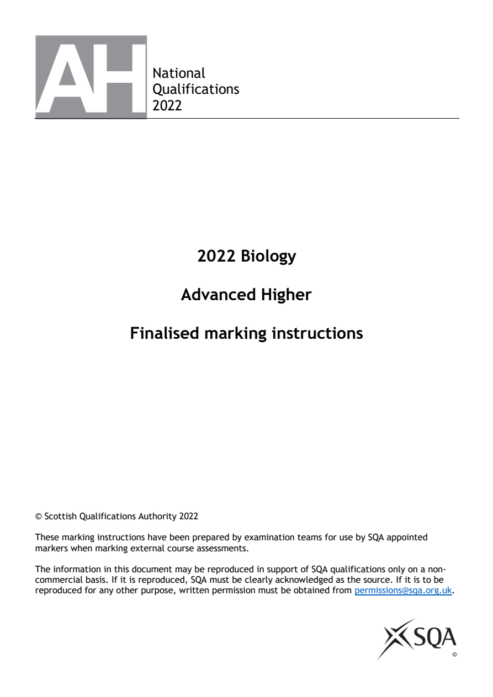
Selectable page text
National
Qualifications
2022
2022 Biology
Advanced Higher
Finalised marking instructions
© Scottish Qualifications Authority 2022
These marking instructions have been prepared by examination teams for use by SQA appointed
markers when marking external course assessments.
The information in this document may be reproduced in support of SQA qualifications only on a non-
commercial basis. If it is reproduced, SQA must be clearly acknowledged as the source. If it is to be
reproduced for any other purpose, written permission must be obtained from permissions@sqa.org.uk.PDF page 2
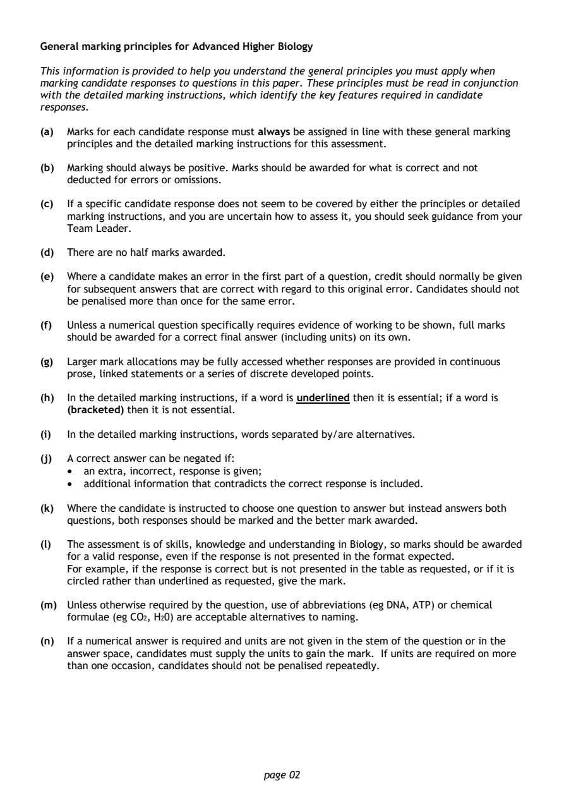
Selectable page text
General marking principles for Advanced Higher Biology
This information is provided to help you understand the general principles you must apply when
marking candidate responses to questions in this paper. These principles must be read in conjunction
with the detailed marking instructions, which identify the key features required in candidate
responses.
(a) Marks for each candidate response must always be assigned in line with these general marking
principles and the detailed marking instructions for this assessment.
(b) Marking should always be positive. Marks should be awarded for what is correct and not
deducted for errors or omissions.
(c) If a specific candidate response does not seem to be covered by either the principles or detailed
marking instructions, and you are uncertain how to assess it, you should seek guidance from your
Team Leader.
(d) There are no half marks awarded.
(e) Where a candidate makes an error in the first part of a question, credit should normally be given
for subsequent answers that are correct with regard to this original error. Candidates should not
be penalised more than once for the same error.
(f) Unless a numerical question specifically requires evidence of working to be shown, full marks
should be awarded for a correct final answer (including units) on its own.
(g) Larger mark allocations may be fully accessed whether responses are provided in continuous
prose, linked statements or a series of discrete developed points.
(h) In the detailed marking instructions, if a word is underlined then it is essential; if a word is
(bracketed) then it is not essential.
(i) In the detailed marking instructions, words separated by/are alternatives.
(j) A correct answer can be negated if:
• an extra, incorrect, response is given;
• additional information that contradicts the correct response is included.
(k) Where the candidate is instructed to choose one question to answer but instead answers both
questions, both responses should be marked and the better mark awarded.
(l) The assessment is of skills, knowledge and understanding in Biology, so marks should be awarded
for a valid response, even if the response is not presented in the format expected.
For example, if the response is correct but is not presented in the table as requested, or if it is
circled rather than underlined as requested, give the mark.
(m) Unless otherwise required by the question, use of abbreviations (eg DNA, ATP) or chemical
formulae (eg CO , H 0) are acceptable alternatives to naming.
2 2
(n) If a numerical answer is required and units are not given in the stem of the question or in the
answer space, candidates must supply the units to gain the mark. If units are required on more
than one occasion, candidates should not be penalised repeatedly.
page 02PDF page 3
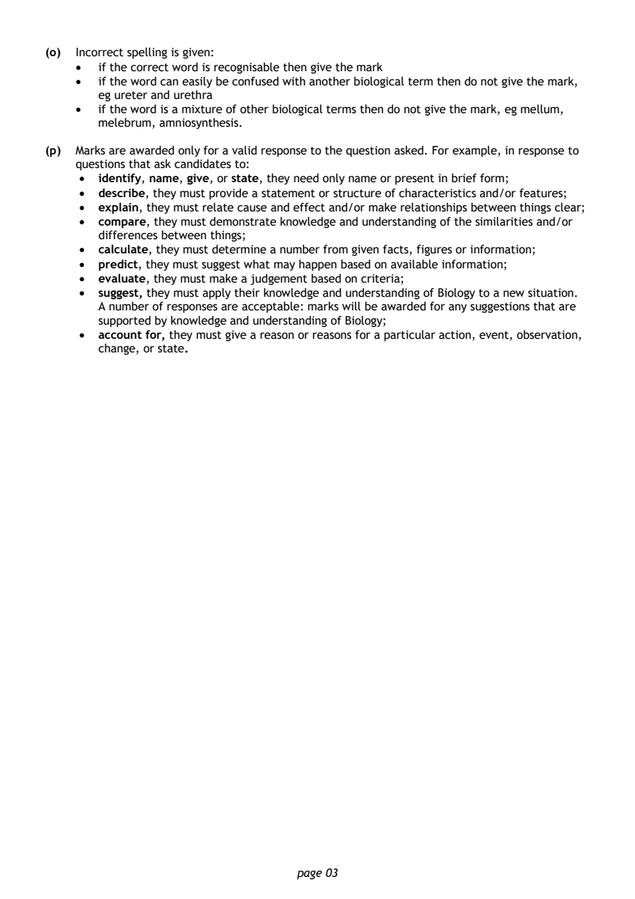
Selectable page text
(o) Incorrect spelling is given:
• if the correct word is recognisable then give the mark
• if the word can easily be confused with another biological term then do not give the mark,
eg ureter and urethra
• if the word is a mixture of other biological terms then do not give the mark, eg mellum,
melebrum, amniosynthesis.
(p) Marks are awarded only for a valid response to the question asked. For example, in response to
questions that ask candidates to:
• identify, name, give, or state, they need only name or present in brief form;
• describe, they must provide a statement or structure of characteristics and/or features;
• explain, they must relate cause and effect and/or make relationships between things clear;
• compare, they must demonstrate knowledge and understanding of the similarities and/or
differences between things;
• calculate, they must determine a number from given facts, figures or information;
• predict, they must suggest what may happen based on available information;
• evaluate, they must make a judgement based on criteria;
• suggest, they must apply their knowledge and understanding of Biology to a new situation.
A number of responses are acceptable: marks will be awarded for any suggestions that are
supported by knowledge and understanding of Biology;
• account for, they must give a reason or reasons for a particular action, event, observation,
change, or state.
page 03PDF page 4
Paper 1, Question 1Paper 1, Question 2Paper 1, Question 3Paper 1, Question 4Paper 1, Question 5Paper 1, Question 6Paper 1, Question 7Paper 1, Question 8Paper 1, Question 9Paper 1, Question 10Paper 1, Question 11Paper 1, Question 12Paper 1, Question 13Paper 1, Question 14Paper 1, Question 15Paper 1, Question 16Paper 1, Question 17Paper 1, Question 18Paper 1, Question 19Paper 1, Question 20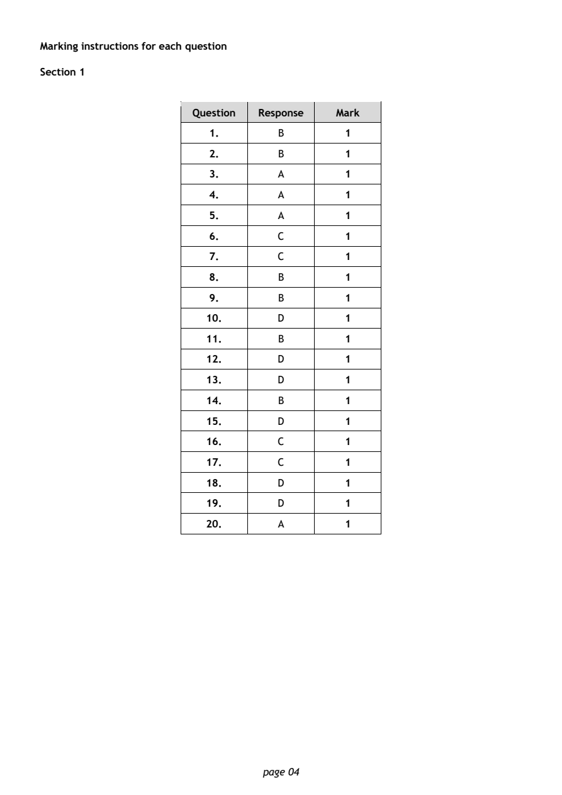
Selectable page text
Marking instructions for each question
Section 1
Question Response Mark
1. B 1
2. B 1
3. A 1
4. A 1
5. A 1
6. C 1
7. C 1
8. B 1
9. B 1
10. D 1
11. B 1
12. D 1
13. D 1
14. B 1
15. D 1
16. C 1
17. C 1
18. D 1
19. D 1
20. A 1
page 04PDF page 5
Paper 2, Question 1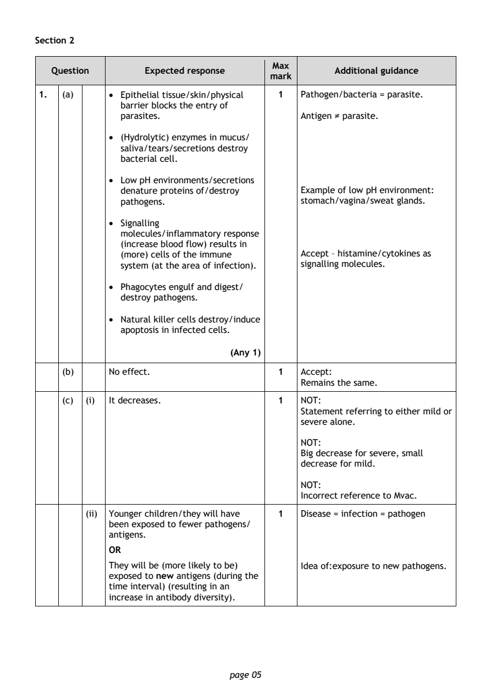
Selectable page text
Section 2
Max
Question Expected response Additional guidance
mark
1. (a) • Epithelial tissue/skin/physical 1 Pathogen/bacteria = parasite.
barrier blocks the entry of
parasites. Antigen ≠ parasite.
• (Hydrolytic) enzymes in mucus/
saliva/tears/secretions destroy
bacterial cell.
• Low pH environments/secretions
denature proteins of/destroy Example of low pH environment:
pathogens. stomach/vagina/sweat glands.
• Signalling
molecules/inflammatory response
(increase blood flow) results in
(more) cells of the immune Accept – histamine/cytokines as
system (at the area of infection). signalling molecules.
• Phagocytes engulf and digest/
destroy pathogens.
• Natural killer cells destroy/induce
apoptosis in infected cells.
(Any 1)
(b) No effect. 1 Accept:
Remains the same.
(c) (i) It decreases. 1 NOT:
Statement referring to either mild or
severe alone.
NOT:
Big decrease for severe, small
decrease for mild.
NOT:
Incorrect reference to Mvac.
(ii) Younger children/they will have 1 Disease = infection = pathogen
been exposed to fewer pathogens/
antigens.
OR
They will be (more likely to be) Idea of:exposure to new pathogens.
exposed to new antigens (during the
time interval) (resulting in an
increase in antibody diversity).
page 05PDF page 6
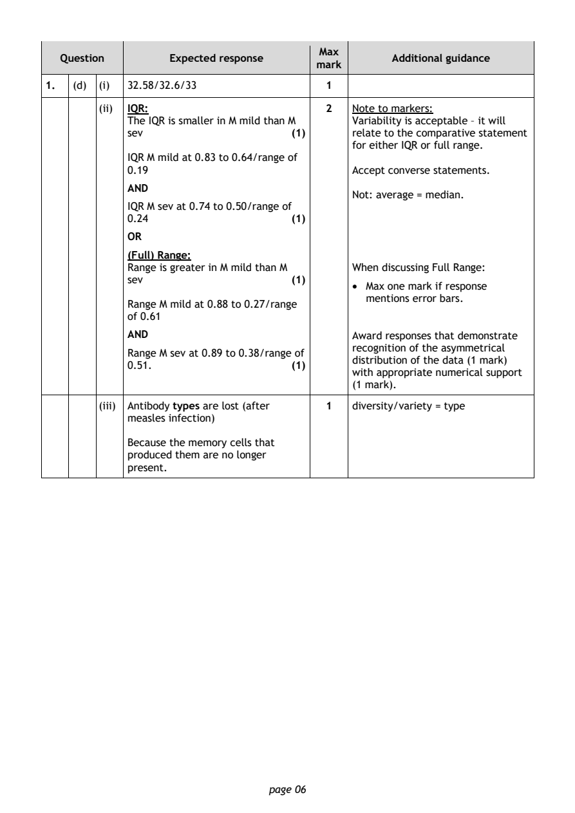
Selectable page text
Max
Question Expected response Additional guidance
mark
1. (d) (i) 32.58/32.6/33 1
(ii) IQR: 2 Note to markers:
The IQR is smaller in M mild than M Variability is acceptable – it will
sev (1) relate to the comparative statement
for either IQR or full range.
IQR M mild at 0.83 to 0.64/range of
0.19 Accept converse statements.
AND
Not: average = median.
IQR M sev at 0.74 to 0.50/range of
0.24 (1)
OR
(Full) Range:
Range is greater in M mild than M When discussing Full Range:
sev (1)
• Max one mark if response
mentions error bars.
Range M mild at 0.88 to 0.27/range
of 0.61
AND Award responses that demonstrate
recognition of the asymmetrical
Range M sev at 0.89 to 0.38/range of
distribution of the data (1 mark)
0.51. (1)
with appropriate numerical support
(1 mark).
(iii) Antibody types are lost (after 1 diversity/variety = type
measles infection)
Because the memory cells that
produced them are no longer
present.
page 06PDF page 7
Paper 2, Question 2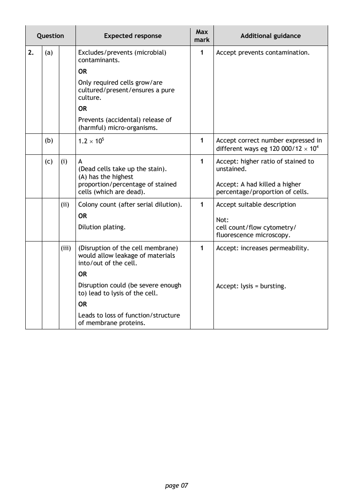
Selectable page text
Max
Question Expected response Additional guidance
mark
2. (a) Excludes/prevents (microbial) 1 Accept prevents contamination.
contaminants.
OR
Only required cells grow/are
cultured/present/ensures a pure
culture.
OR
Prevents (accidental) release of
(harmful) micro-organisms.
(b) 1.2 × 10⁵ 1 Accept correct number expressed in
different ways eg 120 000/12 × 10⁴
(c) (i) A 1 Accept: higher ratio of stained to
(Dead cells take up the stain). unstained.
(A) has the highest
proportion/percentage of stained Accept: A had killed a higher
cells (which are dead). percentage/proportion of cells.
(ii) Colony count (after serial dilution). 1 Accept suitable description
OR
Not:
Dilution plating. cell count/flow cytometry/
fluorescence microscopy.
(iii) (Disruption of the cell membrane) 1 Accept: increases permeability.
would allow leakage of materials
into/out of the cell.
OR
Disruption could (be severe enough Accept: lysis = bursting.
to) lead to lysis of the cell.
OR
Leads to loss of function/structure
of membrane proteins.
page 07PDF page 8
Paper 2, Question 3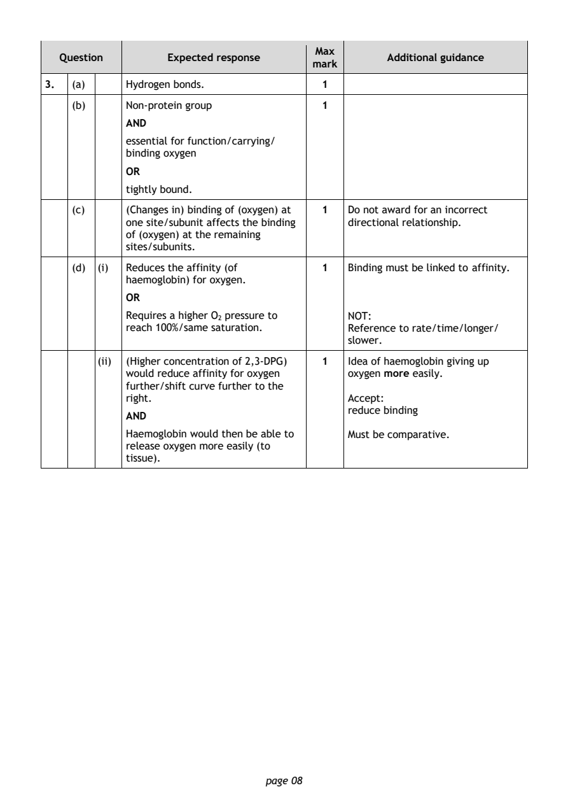
Selectable page text
Max
Question Expected response Additional guidance
mark
3. (a) Hydrogen bonds. 1
(b) Non-protein group 1
AND
essential for function/carrying/
binding oxygen
OR
tightly bound.
(c) (Changes in) binding of (oxygen) at 1 Do not award for an incorrect
one site/subunit affects the binding directional relationship.
of (oxygen) at the remaining
sites/subunits.
(d) (i) Reduces the affinity (of 1 Binding must be linked to affinity.
haemoglobin) for oxygen.
OR
Requires a higher O pressure to NOT:
reach 100%/same sa²turation. Reference to rate/time/longer/
slower.
(ii) (Higher concentration of 2,3-DPG) 1 Idea of haemoglobin giving up
would reduce affinity for oxygen oxygen more easily.
further/shift curve further to the
right. Accept:
reduce binding
AND
Haemoglobin would then be able to Must be comparative.
release oxygen more easily (to
tissue).
page 08PDF page 9
Paper 2, Question 4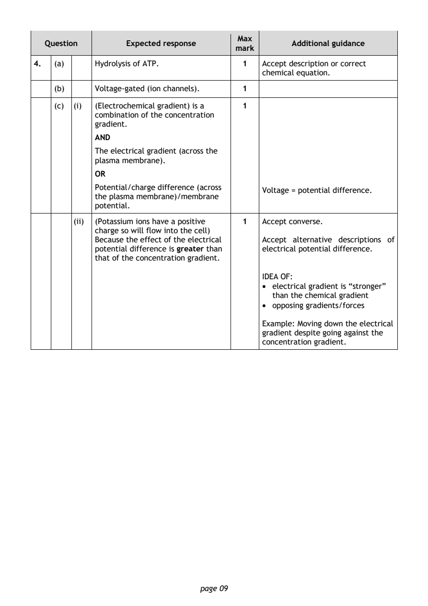
Selectable page text
Max
Question Expected response Additional guidance
mark
4. (a) Hydrolysis of ATP. 1 Accept description or correct
chemical equation.
(b) Voltage-gated (ion channels). 1
(c) (i) (Electrochemical gradient) is a 1
combination of the concentration
gradient.
AND
The electrical gradient (across the
plasma membrane).
OR
Potential/charge difference (across
Voltage = potential difference.
the plasma membrane)/membrane
potential.
(ii) (Potassium ions have a positive 1 Accept converse.
charge so will flow into the cell)
Because the effect of the electrical Accept alternative descriptions of
potential difference is greater than electrical potential difference.
that of the concentration gradient.
IDEA OF:
• electrical gradient is “stronger”
than the chemical gradient
• opposing gradients/forces
Example: Moving down the electrical
gradient despite going against the
concentration gradient.
page 09PDF page 10
Paper 2, Question 5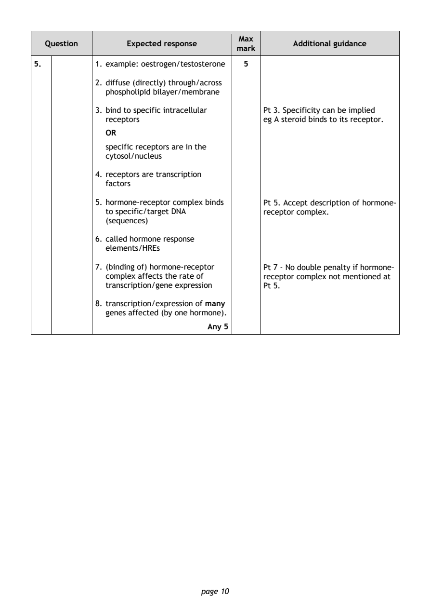
Selectable page text
Max
Question Expected response Additional guidance
mark
5. 1. example: oestrogen/testosterone 5
2. diffuse (directly) through/across
phospholipid bilayer/membrane
3. bind to specific intracellular Pt 3. Specificity can be implied
receptors eg A steroid binds to its receptor.
OR
specific receptors are in the
cytosol/nucleus
4. receptors are transcription
factors
5. hormone-receptor complex binds Pt 5. Accept description of hormone-
to specific/target DNA receptor complex.
(sequences)
6. called hormone response
elements/HREs
7. (binding of) hormone-receptor Pt 7 - No double penalty if hormone-
complex affects the rate of receptor complex not mentioned at
transcription/gene expression Pt 5.
8. transcription/expression of many
genes affected (by one hormone).
Any 5
page 10PDF page 11
Paper 2, Question 6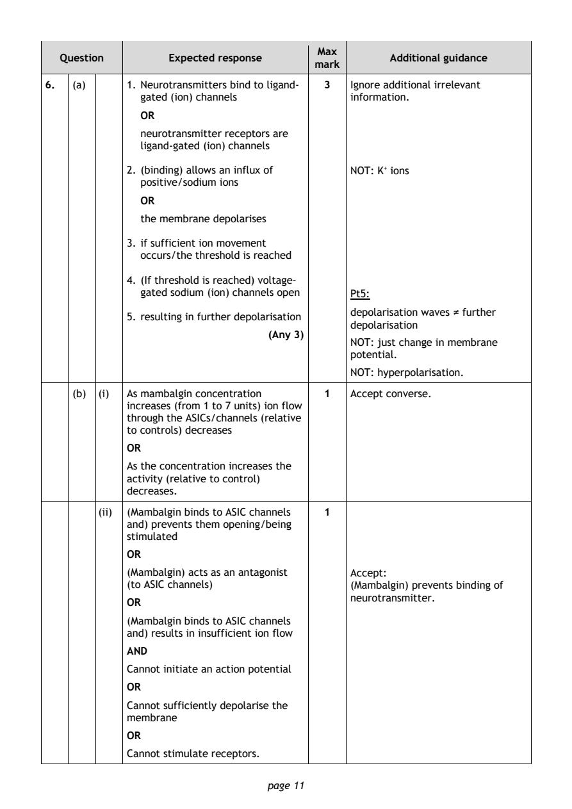
Selectable page text
Max
Question Expected response Additional guidance
mark
6. (a) 1. Neurotransmitters bind to ligand- 3 Ignore additional irrelevant
gated (ion) channels information.
OR
neurotransmitter receptors are
ligand-gated (ion) channels
2. (binding) allows an influx of NOT: K⁺ ions
positive/sodium ions
OR
the membrane depolarises
3. if sufficient ion movement
occurs/the threshold is reached
4. (If threshold is reached) voltage-
gated sodium (ion) channels open Pt5:
depolarisation waves ≠ further
5. resulting in further depolarisation
depolarisation
(Any 3)
NOT: just change in membrane
potential.
NOT: hyperpolarisation.
(b) (i) As mambalgin concentration 1 Accept converse.
increases (from 1 to 7 units) ion flow
through the ASICs/channels (relative
to controls) decreases
OR
As the concentration increases the
activity (relative to control)
decreases.
(ii) (Mambalgin binds to ASIC channels 1
and) prevents them opening/being
stimulated
OR
(Mambalgin) acts as an antagonist Accept:
(to ASIC channels) (Mambalgin) prevents binding of
neurotransmitter.
OR
(Mambalgin binds to ASIC channels
and) results in insufficient ion flow
AND
Cannot initiate an action potential
OR
Cannot sufficiently depolarise the
membrane
OR
Cannot stimulate receptors.
page 11PDF page 12
Paper 2, Question 7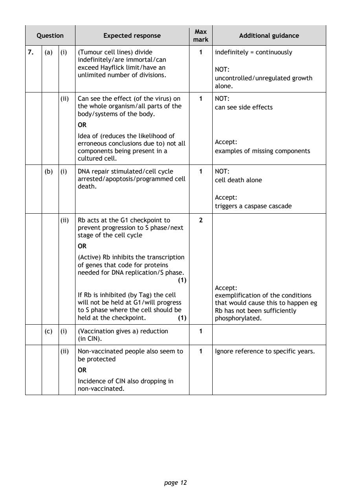
Selectable page text
Max
Question Expected response Additional guidance
mark
7. (a) (i) (Tumour cell lines) divide 1 indefinitely = continuously
indefinitely/are immortal/can
exceed Hayflick limit/have an
NOT:
unlimited number of divisions.
uncontrolled/unregulated growth
alone.
(ii) Can see the effect (of the virus) on 1 NOT:
the whole organism/all parts of the can see side effects
body/systems of the body.
OR
Idea of (reduces the likelihood of
erroneous conclusions due to) not all Accept:
components being present in a examples of missing components
cultured cell.
(b) (i) DNA repair stimulated/cell cycle 1 NOT:
arrested/apoptosis/programmed cell cell death alone
death.
Accept:
triggers a caspase cascade
(ii) Rb acts at the G1 checkpoint to 2
prevent progression to S phase/next
stage of the cell cycle
OR
(Active) Rb inhibits the transcription
of genes that code for proteins
needed for DNA replication/S phase.
(1)
Accept:
If Rb is inhibited (by Tag) the cell exemplification of the conditions
will not be held at G1/will progress that would cause this to happen eg
to S phase where the cell should be Rb has not been sufficiently
held at the checkpoint. (1) phosphorylated.
(c) (i) (Vaccination gives a) reduction 1
(in CIN).
(ii) Non-vaccinated people also seem to 1 Ignore reference to specific years.
be protected
OR
Incidence of CIN also dropping in
non-vaccinated.
page 12PDF page 13
Paper 2, Question 8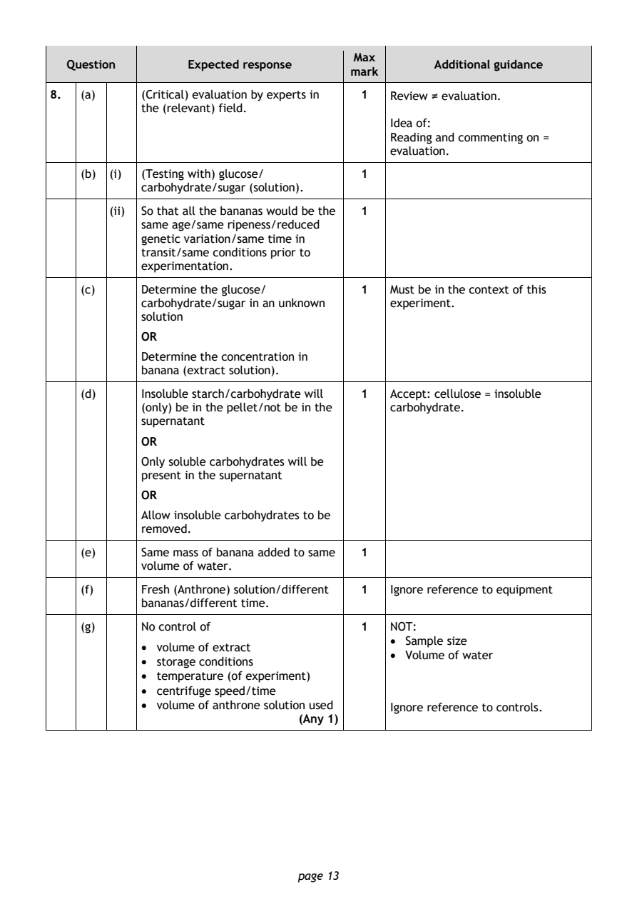
Selectable page text
Max
Question Expected response Additional guidance
mark
8. (a) (Critical) evaluation by experts in 1 Review ≠ evaluation.
the (relevant) field.
Idea of:
Reading and commenting on =
evaluation.
(b) (i) (Testing with) glucose/ 1
carbohydrate/sugar (solution).
(ii) So that all the bananas would be the 1
same age/same ripeness/reduced
genetic variation/same time in
transit/same conditions prior to
experimentation.
(c) Determine the glucose/ 1 Must be in the context of this
carbohydrate/sugar in an unknown experiment.
solution
OR
Determine the concentration in
banana (extract solution).
(d) Insoluble starch/carbohydrate will 1 Accept: cellulose = insoluble
(only) be in the pellet/not be in the carbohydrate.
supernatant
OR
Only soluble carbohydrates will be
present in the supernatant
OR
Allow insoluble carbohydrates to be
removed.
(e) Same mass of banana added to same 1
volume of water.
(f) Fresh (Anthrone) solution/different 1 Ignore reference to equipment
bananas/different time.
(g) No control of 1 NOT:
• Sample size
• volume of extract
• Volume of water
• storage conditions
• temperature (of experiment)
• centrifuge speed/time
• volume of anthrone solution used Ignore reference to controls.
(Any 1)
page 13PDF page 14
Paper 2, Question 9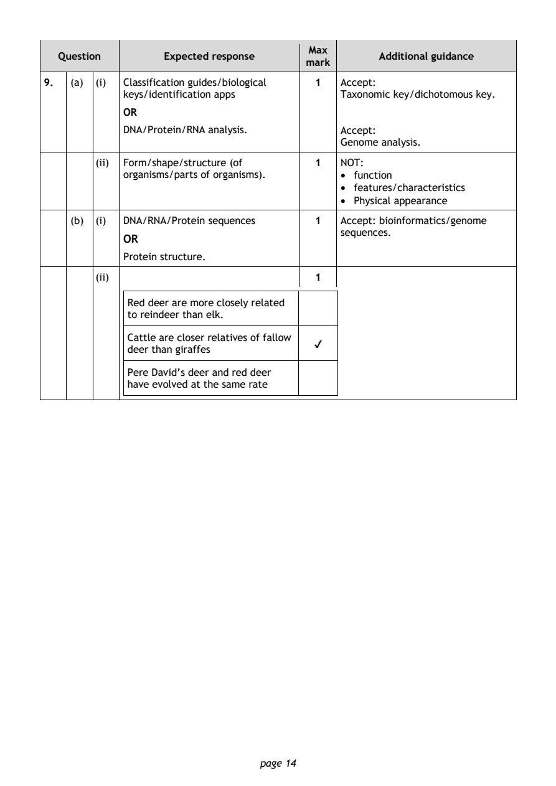
Selectable page text
Max
Question Expected response Additional guidance
mark
9. (a) (i) Classification guides/biological 1 Accept:
keys/identification apps Taxonomic key/dichotomous key.
OR
DNA/Protein/RNA analysis. Accept:
Genome analysis.
(ii) Form/shape/structure (of 1 NOT:
organisms/parts of organisms). • function
• features/characteristics
• Physical appearance
(b) (i) DNA/RNA/Protein sequences 1 Accept: bioinformatics/genome
sequences.
OR
Protein structure.
(ii) 1
Red deer are more closely related
to reindeer than elk.
Cattle are closer relatives of fallow
✔
deer than giraffes
Pere David’s deer and red deer
have evolved at the same rate
page 14PDF page 15
Paper 2, Question 10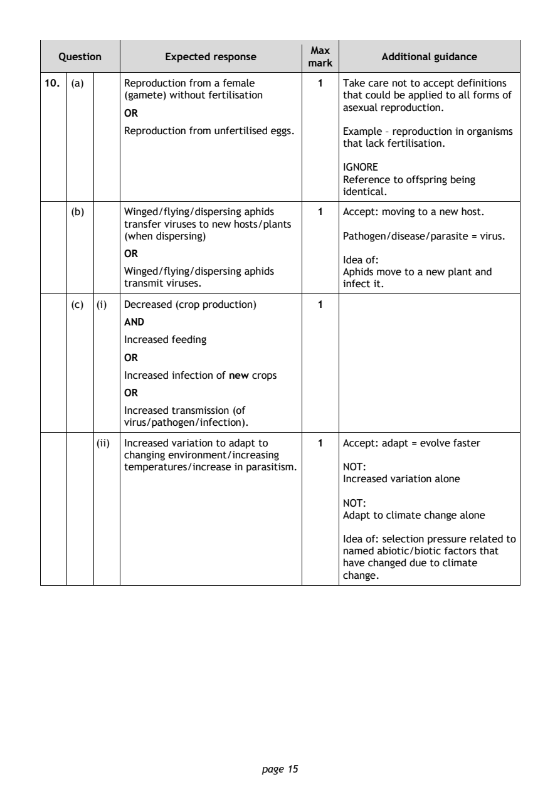
Selectable page text
Max
Question Expected response Additional guidance
mark
10. (a) Reproduction from a female 1 Take care not to accept definitions
(gamete) without fertilisation that could be applied to all forms of
asexual reproduction.
OR
Reproduction from unfertilised eggs. Example – reproduction in organisms
that lack fertilisation.
IGNORE
Reference to offspring being
identical.
(b) Winged/flying/dispersing aphids 1 Accept: moving to a new host.
transfer viruses to new hosts/plants
(when dispersing) Pathogen/disease/parasite = virus.
OR
Idea of:
Winged/flying/dispersing aphids Aphids move to a new plant and
transmit viruses. infect it.
(c) (i) Decreased (crop production) 1
AND
Increased feeding
OR
Increased infection of new crops
OR
Increased transmission (of
virus/pathogen/infection).
(ii) Increased variation to adapt to 1 Accept: adapt = evolve faster
changing environment/increasing
temperatures/increase in parasitism. NOT:
Increased variation alone
NOT:
Adapt to climate change alone
Idea of: selection pressure related to
named abiotic/biotic factors that
have changed due to climate
change.
page 15PDF page 16
Paper 2, Question 11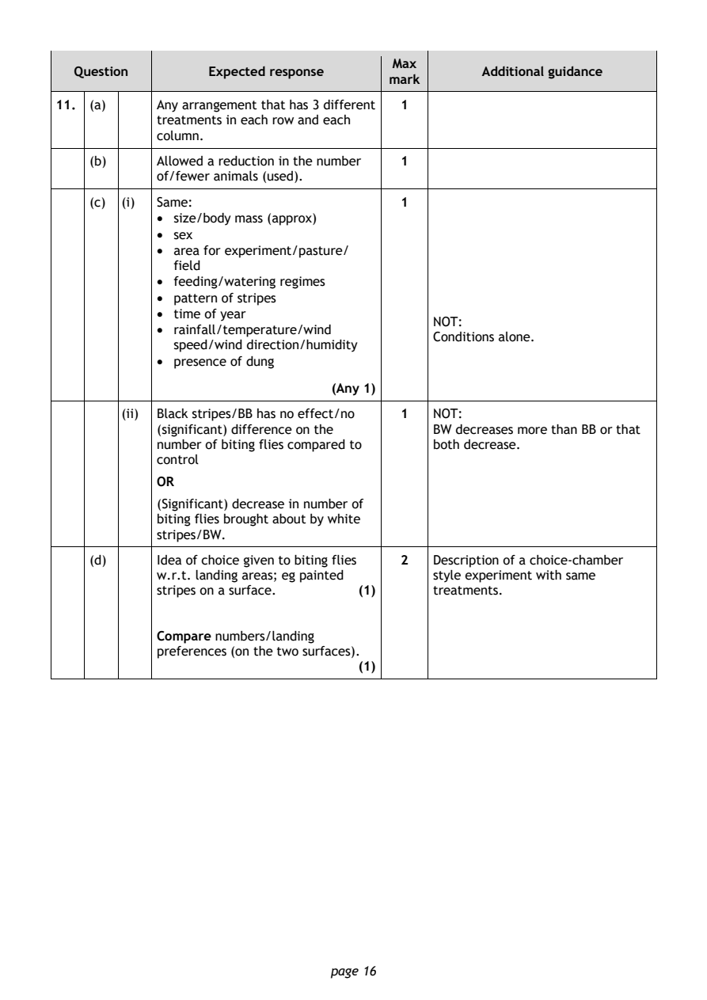
Selectable page text
Max
Question Expected response Additional guidance
mark
11. (a) Any arrangement that has 3 different 1
treatments in each row and each
column.
(b) Allowed a reduction in the number 1
of/fewer animals (used).
(c) (i) Same: 1
• size/body mass (approx)
• sex
• area for experiment/pasture/
field
• feeding/watering regimes
• pattern of stripes
• time of year
NOT:
• rainfall/temperature/wind
Conditions alone.
speed/wind direction/humidity
• presence of dung
(Any 1)
(ii) Black stripes/BB has no effect/no 1 NOT:
(significant) difference on the BW decreases more than BB or that
number of biting flies compared to both decrease.
control
OR
(Significant) decrease in number of
biting flies brought about by white
stripes/BW.
(d) Idea of choice given to biting flies 2 Description of a choice-chamber
w.r.t. landing areas; eg painted style experiment with same
stripes on a surface. (1) treatments.
Compare numbers/landing
preferences (on the two surfaces).
(1)
page 16PDF page 17
Paper 2, Question 12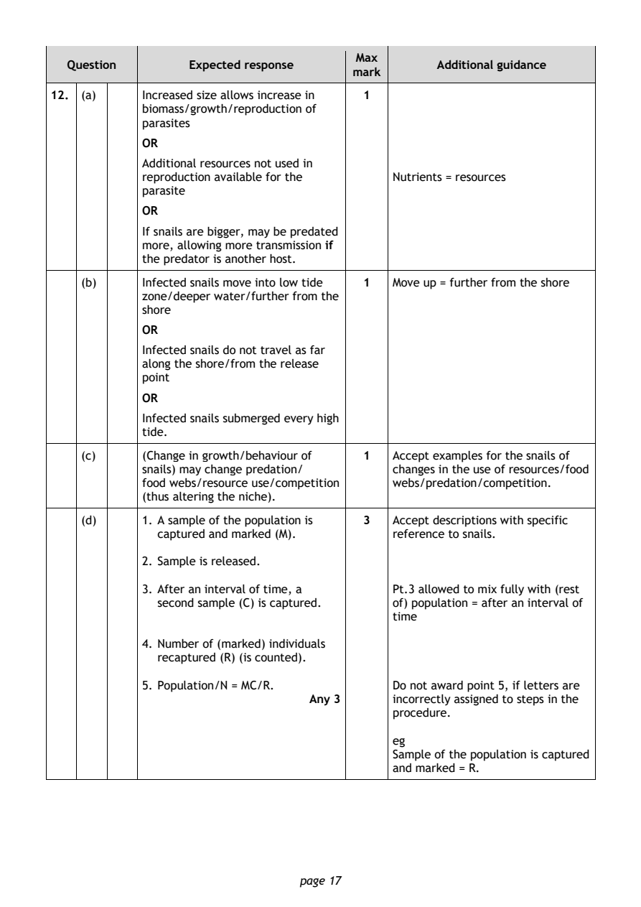
Selectable page text
Max
Question Expected response Additional guidance
mark
12. (a) Increased size allows increase in 1
biomass/growth/reproduction of
parasites
OR
Additional resources not used in
reproduction available for the Nutrients = resources
parasite
OR
If snails are bigger, may be predated
more, allowing more transmission if
the predator is another host.
(b) Infected snails move into low tide 1 Move up = further from the shore
zone/deeper water/further from the
shore
OR
Infected snails do not travel as far
along the shore/from the release
point
OR
Infected snails submerged every high
tide.
(c) (Change in growth/behaviour of 1 Accept examples for the snails of
snails) may change predation/ changes in the use of resources/food
food webs/resource use/competition webs/predation/competition.
(thus altering the niche).
(d) 1. A sample of the population is 3 Accept descriptions with specific
captured and marked (M). reference to snails.
2. Sample is released.
3. After an interval of time, a Pt.3 allowed to mix fully with (rest
second sample (C) is captured. of) population = after an interval of
time
4. Number of (marked) individuals
recaptured (R) (is counted).
5. Population/N = MC/R. Do not award point 5, if letters are
Any 3 incorrectly assigned to steps in the
procedure.
eg
Sample of the population is captured
and marked = R.
page 17PDF page 18
Paper 2, Question 13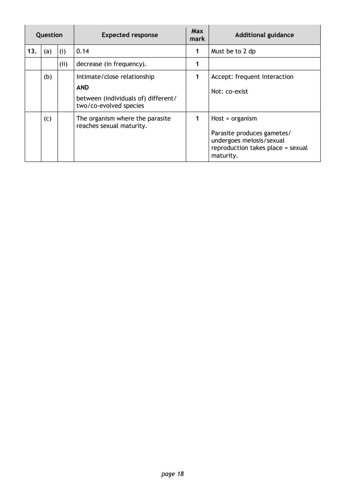
Selectable page text
Max
Question Expected response Additional guidance
mark
13. (a) (i) 0.14 1 Must be to 2 dp
(ii) decrease (in frequency). 1
(b) Intimate/close relationship 1 Accept: frequent interaction
AND
Not: co-exist
between (individuals of) different/
two/co-evolved species
(c) The organism where the parasite 1 Host = organism
reaches sexual maturity.
Parasite produces gametes/
undergoes meiosis/sexual
reproduction takes place = sexual
maturity.
page 18PDF page 19
Paper 2, Question 14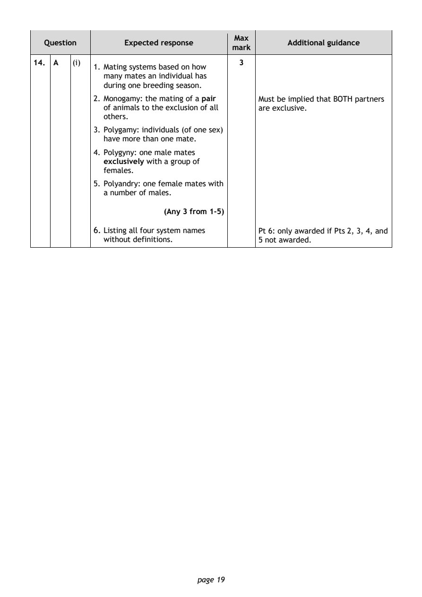
Selectable page text
Max
Question Expected response Additional guidance
mark
14. A (i) 3
1. Mating systems based on how
many mates an individual has
during one breeding season.
2. Monogamy: the mating of a pair Must be implied that BOTH partners
of animals to the exclusion of all are exclusive.
others.
3. Polygamy: individuals (of one sex)
have more than one mate.
4. Polygyny: one male mates
exclusively with a group of
females.
5. Polyandry: one female mates with
a number of males.
(Any 3 from 1-5)
6. Listing all four system names Pt 6: only awarded if Pts 2, 3, 4, and
without definitions. 5 not awarded.
page 19PDF page 20
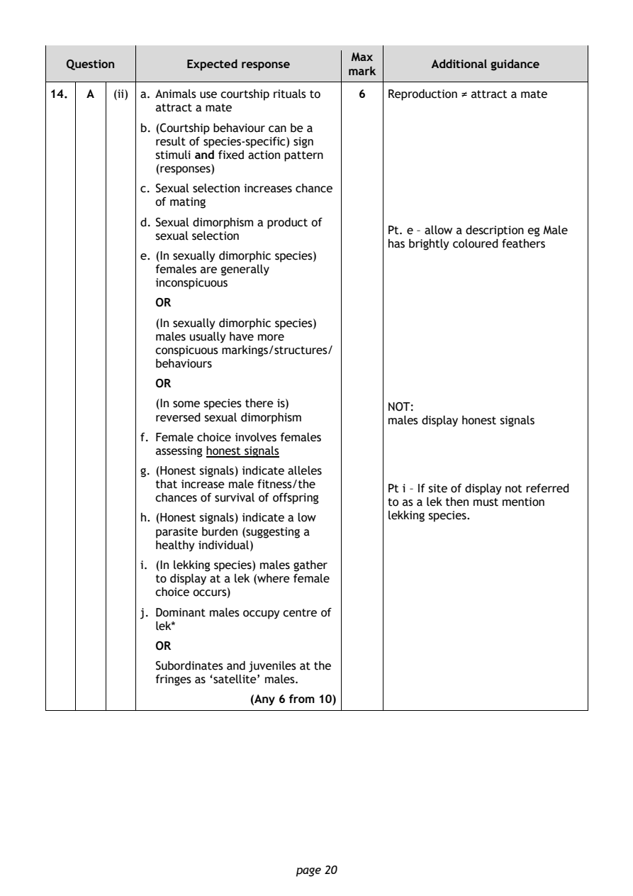
Selectable page text
Max
Question Expected response Additional guidance
mark
14. A (ii) a. Animals use courtship rituals to 6 Reproduction ≠ attract a mate
attract a mate
b. (Courtship behaviour can be a
result of species-specific) sign
stimuli and fixed action pattern
(responses)
c. Sexual selection increases chance
of mating
d. Sexual dimorphism a product of
Pt. e – allow a description eg Male
sexual selection
has brightly coloured feathers
e. (In sexually dimorphic species)
females are generally
inconspicuous
OR
(In sexually dimorphic species)
males usually have more
conspicuous markings/structures/
behaviours
OR
(In some species there is)
NOT:
reversed sexual dimorphism
males display honest signals
f. Female choice involves females
assessing honest signals
g. (Honest signals) indicate alleles
that increase male fitness/the
Pt i – If site of display not referred
chances of survival of offspring
to as a lek then must mention
h. (Honest signals) indicate a low lekking species.
parasite burden (suggesting a
healthy individual)
i. (In lekking species) males gather
to display at a lek (where female
choice occurs)
j. Dominant males occupy centre of
lek*
OR
Subordinates and juveniles at the
fringes as ‘satellite’ males.
(Any 6 from 10)
page 20PDF page 21
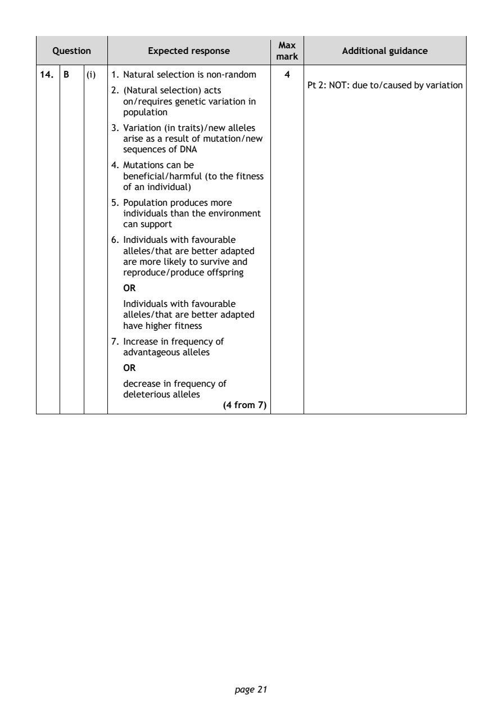
Selectable page text
Max
Question Expected response Additional guidance
mark
14. B (i) 1. Natural selection is non-random 4
Pt 2: NOT: due to/caused by variation
2. (Natural selection) acts
on/requires genetic variation in
population
3. Variation (in traits)/new alleles
arise as a result of mutation/new
sequences of DNA
4. Mutations can be
beneficial/harmful (to the fitness
of an individual)
5. Population produces more
individuals than the environment
can support
6. Individuals with favourable
alleles/that are better adapted
are more likely to survive and
reproduce/produce offspring
OR
Individuals with favourable
alleles/that are better adapted
have higher fitness
7. Increase in frequency of
advantageous alleles
OR
decrease in frequency of
deleterious alleles
(4 from 7)
page 21PDF page 22
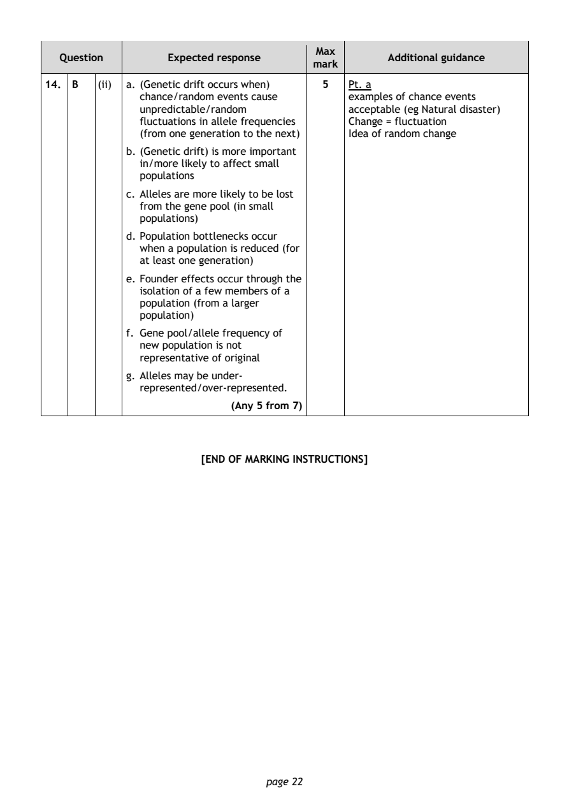
Selectable page text
Max
Question Expected response Additional guidance
mark
14. B (ii) a. (Genetic drift occurs when) 5 Pt. a
chance/random events cause examples of chance events
unpredictable/random acceptable (eg Natural disaster)
fluctuations in allele frequencies Change = fluctuation
(from one generation to the next) Idea of random change
b. (Genetic drift) is more important
in/more likely to affect small
populations
c. Alleles are more likely to be lost
from the gene pool (in small
populations)
d. Population bottlenecks occur
when a population is reduced (for
at least one generation)
e. Founder effects occur through the
isolation of a few members of a
population (from a larger
population)
f. Gene pool/allele frequency of
new population is not
representative of original
g. Alleles may be under-
represented/over-represented.
(Any 5 from 7)
[END OF MARKING INSTRUCTIONS]
page 22